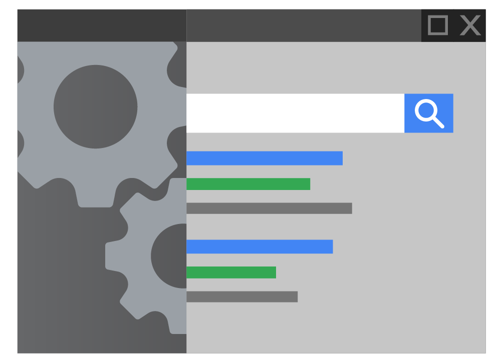
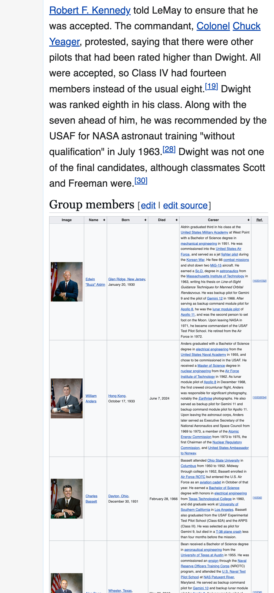
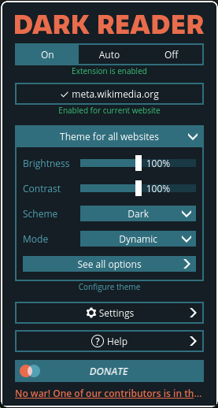

How the Internet Works
How Your Browser Works
Watch & Learn
- What Is a Browser? (Google, 2 min)
- How Do Web Browsers Work? (Dave Xiang, 8 min)
- Anatomy of the Browser 101 (Chrome for Developers, 12 min)
- Google Chrome Developer Tools Crash Course (Traversy Media, 13 min)
Video Quiz
In the Google “What Is a Browser?” video, what do most people on the street confuse a browser with?
In Dave Xiang’s “How Do Web Browsers Work?” video, what are the two tree structures the browser builds from HTML and CSS before displaying anything on screen?
In Dave Xiang’s video, what is the final step in the browser’s rendering pipeline, where pixels are actually drawn on screen?
In the Chrome University “Anatomy of the Browser 101” talk, what is the name of Chrome’s multi-process architecture component that handles rendering a web page?
In the Traversy Media DevTools video, which tab does Brad use to inspect and live-edit CSS styles on a webpage?
In the Traversy Media DevTools video, what does the Network tab show you?
Theory

What a Browser Actually Does
A web browser might look like a simple window that shows web pages, but behind the scenes it performs thousands of steps every time you visit a site. When you type a URL and press Enter, the browser first asks a DNS server to translate that domain name into an IP address. Then it sends an HTTP request to the web server and receives a response — usually an HTML file along with CSS stylesheets and JavaScript files.
The browser’s parser
reads the HTML code line by line and builds a tree-like structure in memory called the
Document Object Model
(DOM). Think of the DOM as a family tree of every element on the page: the <html> tag is the
root, <head> and <body> are its children, and so on.
At the same time, CSS rules are parsed into a parallel structure called the
CSSOM. The browser
merges the DOM and CSSOM into a render tree,
calculates the position and size of every visible element (a step called
layout), and
finally paints the pixels on your screen. All of this happens in a fraction of a second.

Browser Components: Engine Room
Every modern browser is made up of several cooperating parts. The rendering engine (sometimes called the layout engine) is the heart of the browser — it takes HTML, CSS, and images and turns them into the visual page you see. Different browsers use different engines: Blink powers Chrome, Edge, and Opera; Gecko powers Firefox; and WebKit powers Safari.
The JavaScript engine is the component that reads and executes JavaScript code. Chrome’s engine is called V8, and it compiles JavaScript into machine code at incredible speed. Firefox uses SpiderMonkey, the very first JavaScript engine ever built.
The networking layer handles all the HTTP requests and responses — fetching HTML pages, stylesheets, scripts, images, and fonts from servers around the world. There is also a storage layer that manages cookies, cache, and local databases so the browser can remember things between visits.

Developer Tools — Your Secret Weapon
Every major browser ships with a built-in set of
developer tools
(often called “DevTools”). You can open them by pressing F12 or
Ctrl + Shift + I on most browsers. These tools let you peek under the hood of any website —
no permission needed.
The Elements panel shows you the live DOM tree. You can click on any element to see (and change!) its CSS styles in real time. The Console panel lets you type JavaScript commands and see errors. The Network panel lists every file the page downloads — HTML, CSS, JS, images, fonts — along with how long each one took to load. The Application panel shows you stored cookies and local storage data.
DevTools also have a device toolbar that simulates how a page looks on phones and tablets — invaluable when you’re building responsive websites. Professional web developers use DevTools constantly for debugging, performance analysis, and testing layouts.

Browser Extensions: Useful vs. Dangerous
Browser extensions are small add-on programs that modify or enhance your browsing experience. An ad blocker removes advertisements from pages, a password manager auto-fills your login credentials, and a dark-mode extension can restyle every website with a dark colour scheme. Extensions are built using the same web technologies you’re learning — HTML, CSS, and JavaScript — and they run inside a sandboxed environment within the browser.
However, extensions can also be dangerous. Because they can read and modify every page you visit, a malicious extension could steal your passwords, inject ads, track your browsing history, or redirect you to phishing sites. Some extensions start out safe but get sold to shady companies that push a harmful update to millions of users at once.
To stay safe: only install extensions from official stores like the Chrome Web Store or Firefox Add-ons, check the number of users and reviews, read the permissions the extension requests, and remove any extensions you no longer use. If an extension asks for access to “all websites” but it’s just a calculator, that’s a red flag.
Theory Quiz
What two data structures does a browser build from HTML and CSS before it can display a page?
Which rendering engine is used by both Google Chrome and Microsoft Edge?
Which DevTools panel would you use to see how long each file took to download?
Why can a malicious browser extension be especially dangerous?
What is the name of Chrome’s JavaScript engine?
Build: “DevTools Inspector Report”
Use your browser’s Developer Tools to inspect any website you like (try Wikipedia or your school’s website). Then create an HTML page that documents what you found:
- Open DevTools (
F12) on a website of your choice. - In the Elements panel, find and list 5 different HTML elements (for example:
<nav>,<h1>,<img>,<a>,<footer>). For each one, describe what it does on the page. - In the Styles pane, examine 3 CSS rules. Record the selector, the properties, and their values (for example:
body { font-family: sans-serif; background: #fff; }). - Switch to the Network panel, reload the page, and pick 1 network request. Record the file name, type (HTML, CSS, JS, image, or font), status code, and load time.
- Present all of this in a clean, styled HTML report with separate sections for HTML elements, CSS rules, and the network request.
Requirements:
- A heading with the name of the website you inspected
- An “HTML Elements” section with a table or list of 5 elements and their descriptions
- A “CSS Rules” section showing 3 rules in
<code>or<pre>blocks - A “Network Request” section showing file name, type, status, and load time
- Clean styling with at least a custom font, background colour, and spacing
Solve it in JSFiddle:
Open JSFiddlePaste your HTML into the HTML panel, CSS into the CSS panel, and JS into the JavaScript panel. Click “Run” to see the result!